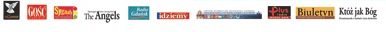

Radio Plus
Radio Gdańsk
Fronda - pismo poświęcone
Gość Niedzielny
Radio Gwidon
Sygnały troski - miesięcznik dla rodziców
dwumiesięcznik Któż Jak Bóg oraz The Angels Magazine
Biuletyn Archidiecezji Gdańskiej
Biuletyn – Kwartalnik o zagrożeniach duchowych
Tygodnik Idziemy
